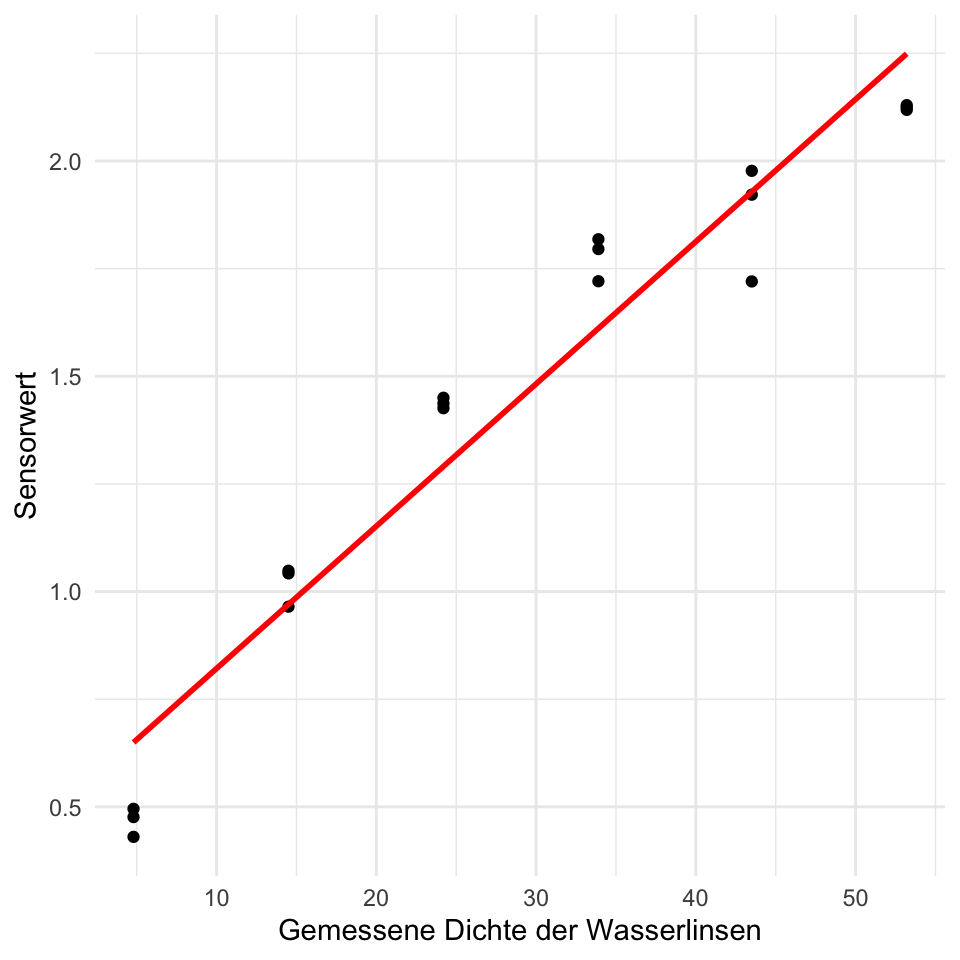
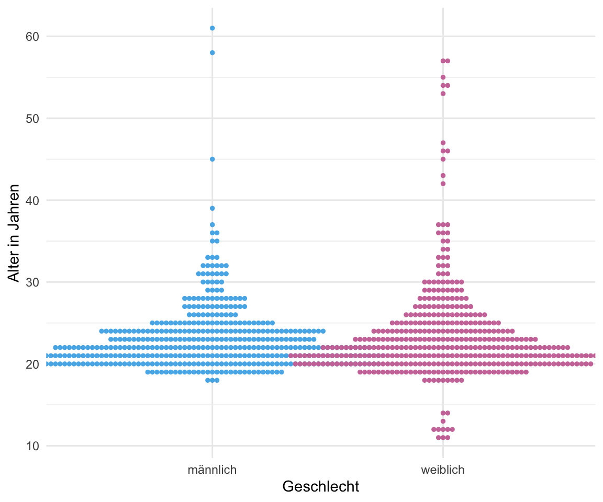
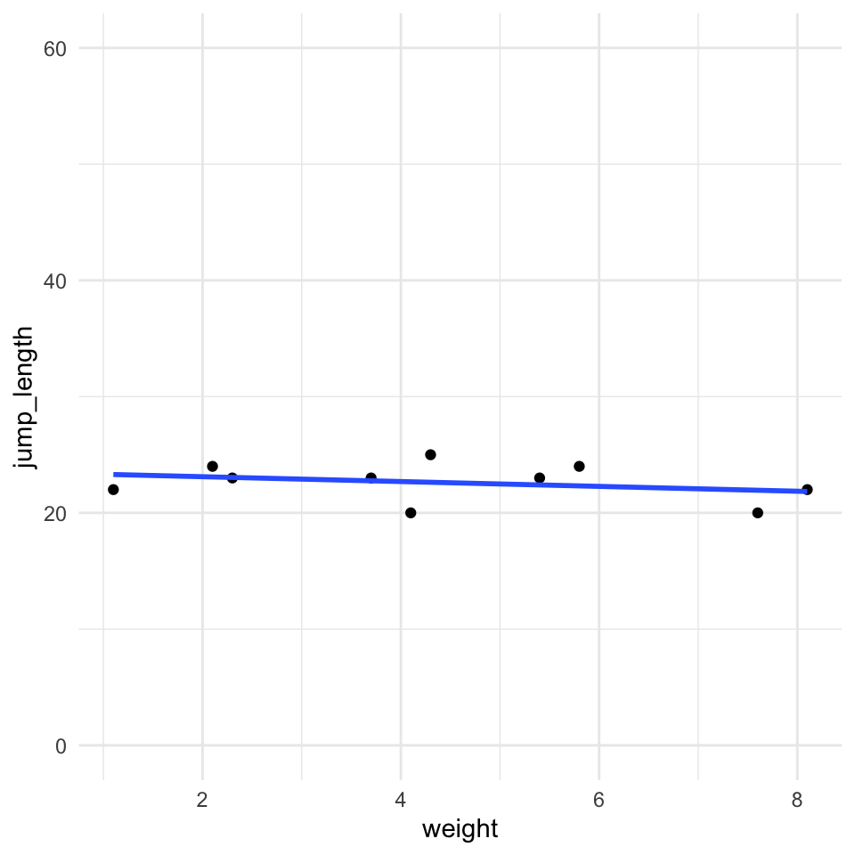
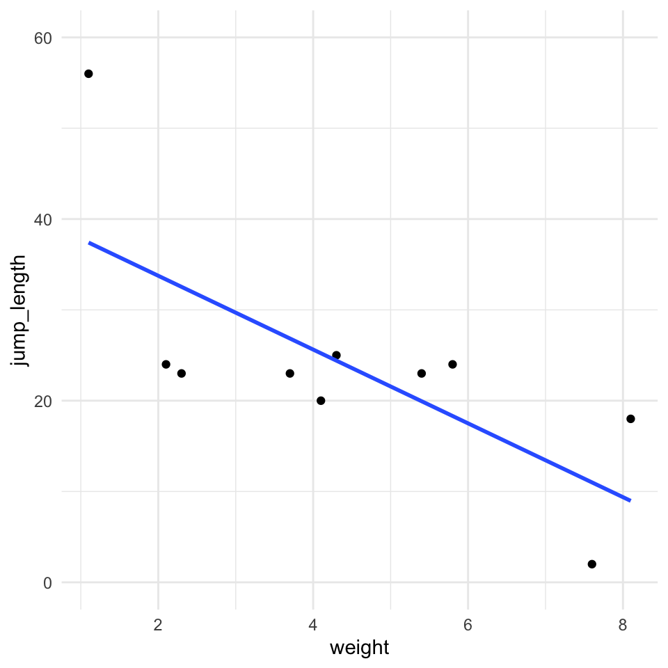
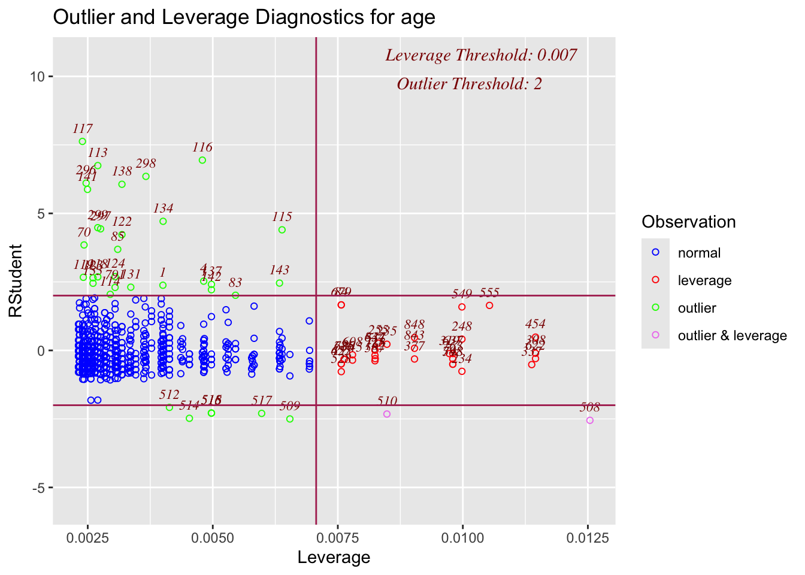
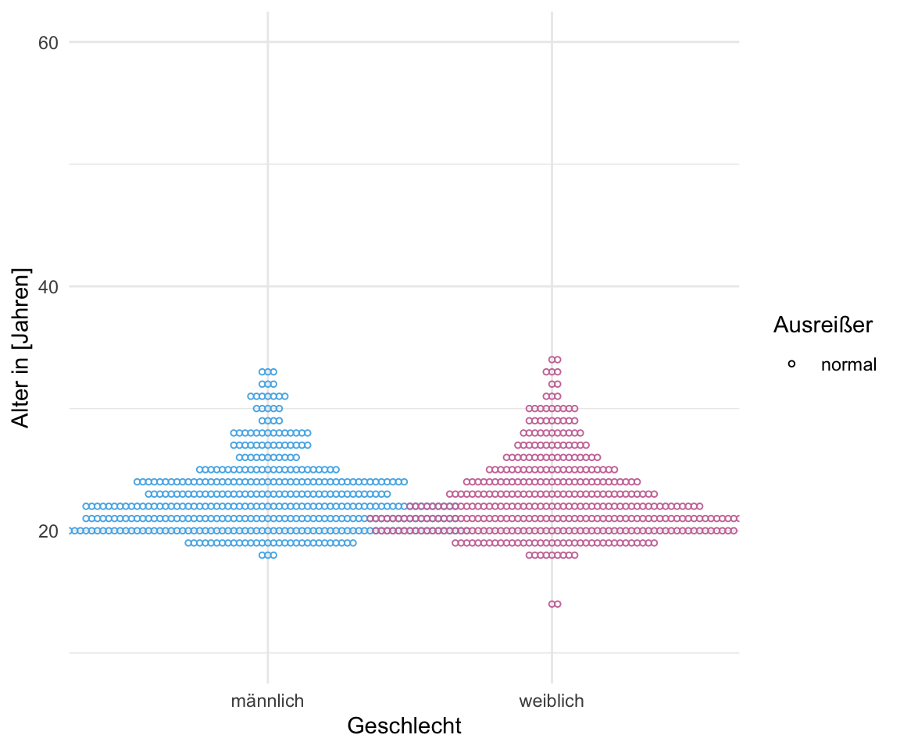

set.seed(20240116)
pacman::p_load(tidyverse, magrittr, broom, readxl,
see, performance, ggbeeswarm, olsrr,
outliers,
conflicted)
conflict_prefer("select", "dplyr")
conflict_prefer("filter", "dplyr")
conflict_prefer("mutate", "dplyr")
conflict_prefer("extract", "magrittr")
conflict_prefer("set_names", "magrittr")
cbbPalette <- c("#000000", "#E69F00", "#56B4E9", "#009E73",
"#F0E442", "#0072B2", "#D55E00", "#CC79A7")40 Ausreißer
Letzte Änderung am 05. February 2024 um 16:33:40
“You should be far more concentrated with your current trajectory than with your current results” — James Clear in Atomic Habits’
Was sind Ausreißer (eng. Outlier) in einem Datensatz? An sich schon eine schwierige Frage. Einige Wissenschaftler behaupten es gebe keine Ausreißer. Die Daten müssten so ausgewertet werden wie die Daten erhoben wurden. Was es gäbe wären technische Artefakte, diese müssten entdeckt und entfernt werden. Andere Wissenschaftler meinen, dass Ausreißer schon existieren und entfernt werden müssen, wenn diese Ausreißer nicht zu der Fragestellung oder den restlichen Daten passen. Es ist eine unbekannte Subpopulation, die sich mit einem oder zwei Vertretern in unsere Daten geschmuggelt hat. Diese Subpopulation verzerrt nur das Ergebnis, da wir mit diesen wenigen anderen Beobachtungen sowieso keine Aussage treffen können. Cook u. a. (2021) meint in seiner wissenschaftlichen Veröffentlichung The Philosophy of Outliers: Reintegrating Rare Events Into Biological Science, dass gerade die seltenen Ereignisse, die wir als Ausreißer definieren, dann vielleicht die spannenden Beobachtungen sind. Warum verhält sich gerade diese eine Beobachtung in diesem Experiment so seltsam? Was will uns die Beobachtung mehr über die biologischen Hintergründe verraten? Aber auch im Falle von Cook u. a. (2021) müssen wir uns sicher sein, dass unsere Ausreißer keine Tippfehler oder einfach nur nicht gegossene Pflanzen sind. Dazu aber gleich nochmal mehr.
Am Ende geht es aber darum Ausreißer zu finden und diese aus den Daten zu entfernen. Wir setzen dann diese Werte der Ausreißer auf NA für fehlender Wert (eng. not available). Oder aber wir ersetzen die Ausreißer durch passendere Werte aus unseren Daten. Im Prinzip ein wenig wie finde den Ausreißer und imputiere den Ausreißer mit einer anderen Zahl. Mehr zur Imputation von fehlenden Werten findest du in Kapitel 42. Vermeide bitte eine Ausreißer/Imputationsschleife in der du immer wieder Ausreißer findest und diese dann wieder imputierst! Gerade dieses Thema Ausreißer kann sehr gut von biologischen Fachexperten diskutiert werden. In den folgenden Abschnitten wollen wir uns verschiedene Möglichkeiten der Detektion von Ausreißern annähern. Es geht wie immer von algorithmisch einfach zu komplexer. Es ist auch möglich mit der Hauptkomponentenanalyse Ausreißer zu finden, aber das ist dann Thema in dem entsprechenden Kapitel 59. Bitte dann dort einmal nachschauen. Darüber hinaus gebe ich zuerst nochmal eine kleine Auswahl an Literatur zu dem Thema Ausreißer. Die kannst du auch überspringen, wenn dich das Thema nicht tiefer interessiert. Ein weitreichenden Überblick liefert aber auf jeden Fall Boukerche u. a. (2020) mit ihrer wissenschaftlichen Veröffentlichung Outlier Detection: Methods, Models, and Classification.

Bitte beiße dich nicht an der statistischen Auslegung eines Ausreißers fest. Du bist der Herr oder die Frau über deine Daten. Kein Algorithmus weiß mehr als du. Das macht statistischen Engel natürlich traurig…
Bitte beachte, dass wenn du weist, dass ein Wert nicht richtig ist, diesen dann auch entfernt. Wenn du während der Beprobung oder Messung feststellst, dass du leider auf dem Feld zu wenig Erde mitgenommen hast, dann trage ein NA in die Tabelle ein. Unsinnige Werte einzutragen, nur weil die “ja so entstanden sind”, macht keinen Sinn. Auch kann es sein, dass du dich mal vertippst. Das heißt, du hast in die Exceltabelle eine Null oder ein Komma falsch gesetzt. Das findest du dann ja meist in der explorativen Datenanalyse raus. In dem Fall korrigiere diese falschen Werte und mache bitte nicht hier mit der Detektion von Ausreißern weiter. Wenn du selber weist, warum da so ein komischer Wert in der Tabelle steht, dann korrigiere den Wert und schreibe in deinen Bericht, was du getan hast.
Neben der Biologie gibt es das Problem der Ausreißer oder ungewöhnlichen Messwerte auch in der Physik. Dort heißt das Konzept \(5\sigma\) (eng. five sigma, deu. fünf sigma) auch wenn es nach Lyons (2013) und der wissenschaftlichen Veröffentlichung Discovering the sigificance of 5\(\sigma\) nicht unumstritten ist. Vor allem ist es aber ein einfaches Konzept, da wir mit \(\sigma\) die Standardabweichung meinen. Ein Fünf-Sigma-Wert entspricht einer Wahrscheinlichkeit, und daher mehr oder minder einem \(p\)-Wert, von \(3 \cdot 10^7\), also etwa einem Auftreten von einem Ereignis mit einer Wahrscheinlichkeit von eins zu 3.5 Millionen. Nehmen wir zum Beispiel ein Experiment, bei dem wir 100 Mal eine Münze werfen. Das erwartete Ergebnis sei 50-mal Kopf und die Standardabweichung \(\sigma\) eines solchen Experiments sei fünf. Wenn du nun 55-mal Kopf erhälst, dann ist das ein \(1\sigma\)-Effekt, bei 60-mal Kopf ist das ein \(2\sigma\)-Effekt, bei 65-mal ein \(3\sigma\)-Effekt, bei 70-mal ein \(4\sigma\)-Effekt und bei 75-mal Kopf ein \(5\sigma\)-Effekt. Wenn du also einen \(5\sigma\)-Effekt beobachtest, dann ist es sehr unwahrscheinlich, dass deine Erweartung an 50-mal Kopf wahr ist. Du hast vermutlich eine gefälschte Münze vorliegen. Mehr dazu auch auf der Seite des CERN und dem Artikel Why do physicists mention “five sigma” in their results?
Soweit unser kleiner Ausflug in die Physik. Michel u. a. (2020) beschreiben in ihrer Veröffentlichung New Author Guidelines for Displaying Data and Reporting Data Analysis and Statistical Methods in Experimental Biology Methoden und Anleitungen für die Veröffentlichung von Studien. Wir wollen uns hier einmal auf die Beschreibung der Ausreißer konzentrieren. So schreiben die Autoren wie folgt.
Before identifying outliers, authors should consider the possibility that the data come from a lognormal distribution, which may make a value look as an outlier on a linear but not on a logarithmic scale. — Michel u. a. (2020), p. 139
Wir sollen also einmal überlegen, ob wir vielleicht Daten vorliegen haben, die keiner Normalverteilung folgen und durch eine Transformation wiederum in eine Normalverteilung überführt werden könnten. Die Ausreißer, die wir beobachten gehören also zu den Daten, wir glauben nur an eine falsche Verteilung der Daten und schließen deshalb die Beobachtungen aus. Mehr dazu dann auch in dem Kapitel zu der Transformieren von Daten.
Und auch Michel u. a. (2020) schreiben wie folgt, dass die eigentliche Entscheidung bei den Forschenden liegt, die die Daten erhoben haben.
The choice of the appropriate method for handling apparent outliers depends on the specific circumstances and is up to the investigators. The [journal] ask authors to state in the methods or results section what quality control criteria were used to remove “bad experiments” or outliers, whether these criteria were set in advance, and how many bad points or experiments were removed. — Michel u. a. (2020), p. 139
Was dich natürlich nicht davon befreit, einmal zu zeigen, welche Daten entfernt wurden und welche nicht. Meistens ist es aber natürlich so, dass die Ausreißer schon einen Effekt ausmachen, sondt müsste man die Werte ja auch nicht entfernen.
It may also make sense to report in an online supplement the details on every value or experiment removed as outliers, and to report in that supplement how the results would differ if outliers were not removed. — Michel u. a. (2020), p. 139
Nun ist die Ausreißerbestimmung (eng. outlier detection) auch nicht umstritten. So schreiben Zimek und Filzmoser (2018) in ihrer etwas längeren Veröffentlichung There and back again: Outlier detection between statistical reasoning and data mining algorithms folgenden Absatz zu Ausreißern und was Ausreißer sind.
“[A]n observation (or subset of observations) which appears to be inconsistent with the remainder of that set of data”. In about two decades of research in data mining many methods have been proposed to identify such outliers. Much attention has been spent on doing this ever faster, less attention has been attributed to the description “appears to”. — Zimek und Filzmoser (2018)
Und so drehen wir uns auch hier etwas im Kreis, denn die Frage bleibt immer, was soll den ein Ausreißer sein? Zu welcher Gruppe an Daten vergleichst du den die einzelnen Werte um zu entscheiden, dass dieser bestimmte Wert jetzt ein Ausreißer ist? Den Gedankengang greifen Sejr und Schneider-Kamp (2021) nochmal mit ihrer Veröffentlichung Explainable outlier detection: What, for Whom and Why? auf. In der Arbeit gehen beide nochmal auf die Problematik ein, dass eine Ausreißerbestimmung immer im Kontext der Forschung und auch der Zielgruppe der Forschung gesehen werden muss. Wem willst du eigentlich die Studie berichten? Was ist das Ziel der Studie und wie sind in diesem Kontext Ausreißer zu sehen?
Mein Tipp wäre es jetzt es erstmal mit dem Hampelfilter zu versuchen oder aber der Sigmaregel. Beide Verfahren sind einfach nachzuvollziehen und funktionieren gut. Wenn es komplexer wird, dann gerne das R Paket
{performance}. Für den Fall, dass du eine Gaussianregression rechnest, dann kannst du auch einmal in das R Paket{olsrr}schauen.
Siehe dazu auch das Kapitel der Sensitivitätsanalyse. Nachdem wir Beobachtungen aus unseren Daten entfernt haben, ist es häufig üblich noch eine Sensitivitätsanalysen durchzuführen. Wir Vergleich dann das gereinigte Modell mit anderen Modellen. Oder wir wollen die Frage beantworten, was hat eigentlich mein Entfernen von Ausreißern am Ergebnis geändert? Habe ich eine wichtige Beobachtung rausgeschmissen? Am Ende musst du dann natürlich entscheiden, ob das Ergebnis ohne Ausreißer biologisch sinnvoller ist als das Experiment mit Ausreißern. Besonders wenn dann auch andere Ergebnisse rauskommen.
Weitere Tutorien für das Finden von Ausreißern
Wir immer geht natürlich mehr als ich hier Vorstellen kann. Du findest im Folgenden Tutorien, die mich hier in dem Kapitel inspiriert haben. Besonders das Tutorium zu Anomaly Detection mag interessant sein, da wir uns dort mehrere Variablen auf einmal anschauen.
- Outliers detection in R bietet einen sehr schönen Überblick über Möglichkeiten Ausreißer in Daten zu finden. Ich habe Teile des Tutoriums auch hier in dem Kapitel verwendet.
- 8 methods to find outliers in R (with examples) ist ein ähnliches Tutroium. Es gibt nochmal einen guten Überblick ist aber um einiges kürzer. Daher etwas schneller zu lesen.
- Outliers detection in R liefert ebenfalls nochmal einen Überblick über die Methoden der Ausreißerbestimmung. Auch hier doppelt sich dann vieles, aber dafür hast du hier nochmal etwas mehr Text und Erklärungen.
- Multivariate Anomaly Detection kannst du mit dem R Paket
{mvoutlier}durchführen. Daher schaust du dir nicht nur eine Variable an, sondern gleich mehrere Variablen auf einmal. Ich gehe nur auf Teile des R Paketes hier in dem Kapitel ein.
40.1 Genutzte R Pakete
Friedhof der R Pakete
In diesem Kapitel ist etwas passiert, was ich noch nie in einem anderem Thema erlebt habe. Ich fand R Pakete bei meiner Recherche, die in den letzten Jahren von CRAN runtergenommen wurden, da die Pakete nicht mehr gepflegt werden. Damit sterben natürlich auch einige der Tutorien weg, dir ich so gefunden hatte. Hier also der Friedhof der R Pakete zu der Ausreißerbestimmung mit dem R Paket {dlookr}, {OutlierDetection} sowie {DMwR}. All diese R Pakete werden nicht mehr unterstützt. Einer Nutzung ist dem normalen Anwender abzuraten.
Das R Paket {mvoutlier} funktioniert zwar noch, aber es gibt nur ein einziges Tutorium Anomaly Detection aus dem Jahr 2017. Darüber hinaus ist das Paket weder mit {tidyverse} noch mit {ggplot} kompatibel. Deshalb stelle ich das Paket auch nicht weiter vor.
Wir wollen folgende R Pakete in diesem Kapitel nutzen.
Am Ende des Kapitels findest du nochmal den gesamten R Code in einem Rutsch zum selber durchführen oder aber kopieren.
40.2 Daten
Um die Detektion von Ausreißern besser zu verstehen, schauen wir uns zwei Beispieldaten an. Als erstes einen Datensatz zu dem Wachstum von Wasserlinsen und der Messung derselbigen durch einen Sensor. Wir messen also einmal die Dichte duckweeds_density konventionell und wollen dann sehen, ob unser Sensor die Messungen dann widerspiegelt. Hier können wir vermutlich erstmal von einem linearen Wachstum ausgehen, dann aber vermutlich von einer Sättigung. Wir haben un mal nur begrenzt Platz für immer neue sich teilende Wasserlinsen.
duckweeds_tbl <- read_excel("data/duckweeds_density.xlsx")In der Tabelle 52.2 siehst du dann einmal einen Auszug aus den Daten zu den Wasserlinsen. Es ist ein sehr einfacher Datensatz mit nur zwei Spalten. Wir haben es eigentlich mit einem nicht linearen Zusammenhang zu tun, aber wir schauen uns hier mal an, was die Algorithmen uns so wiedergeben.
| duckweeds_density | sensor |
|---|---|
| 4.8 | 0.4303 |
| 4.8 | 0.4763 |
| 4.8 | 0.4954 |
| … | … |
| 53.2 | 2.1187 |
| 53.2 | 2.1296 |
| 53.2 | 2.1246 |
Im Weiteren betrachten wir noch das Beispiel der Gummibärchendaten. Auch hier haben wir echte Daten vorliegen, so dass wir eventuell Ausreißer entdecken könnten. Da wir hier fehlende Werte in den Daten haben, entfernen wir alle fehlenden Werte mit der Funktion na.omit(). Damit löschen wir jede Zeile in den Daten, wo mindestens ein fehlender Wert auftritt.
gummi_tbl <- read_excel("data/gummibears.xlsx") |>
select(module, gender, age, height) |>
mutate(gender = factor(gender, labels = c("männlich", "weiblich"))) |>
na.omit()In der Tabelle 40.2 ist der Datensatz gummi_tbl nochmal als Auszug dargestellt dargestellt. Nun haben wir hier in dem Datensatz zu den Gummibärchen auch keine fehlenden Werte mehr.
| module | gender | age | height |
|---|---|---|---|
| FU Berlin | männlich | 35 | 193 |
| FU Berlin | weiblich | 21 | 159 |
| FU Berlin | weiblich | 21 | 159 |
| FU Berlin | weiblich | 36 | 180 |
| … | … | … | … |
| Mathematik_und_Statistik | weiblich | 20 | 160 |
| Mathematik_und_Statistik | weiblich | 20 | 175 |
| Mathematik_und_Statistik | weiblich | 20 | 173 |
| Mathematik_und_Statistik | weiblich | 20 | 166 |
Nun wollen wir uns aber erstmal den simpelsten Fall von Ausreißern und die Problematik dahinter visualisieren. Dann arbeiten wir uns zu komplexeren Paketen vor.
40.3 Visualisierung
Betrachten wir also als erstes einmal die Daten der Wasserlinsen. Wenn wir von einem linearen Zusammenhang ausgehen würden, dann sehen die Daten so aus, als würde es Ausreißer zu Beginn und zum Ende der Messreihe geben. Manchmal lässt uns aber das Auge trügen und wir haben gar keinen linearen Zusammenhang in unseren Daten. Wenn wir dann eine log-Transformation durchführen, sehen die Daten schon sehr viel linearer aus. Diesen Weg schlägt auch Michel u. a. (2020) vor, wenn wir Ausreißer an den Rändern beobachten.
Before identifying outliers, authors should consider the possibility that the data come from a lognormal distribution, which may make a value look as an outlier on a linear but not on a logarithmic scale. — Michel u. a. (2020), p. 139
Machen wir das doch einmal in den Daten für unsere Wasserlinsen. In der Abbildung 40.1 siehst du einmal die Daten, wie wir sie gemessen haben und einmal auf der log-Skala. Ich habe dann noch eine Gerade hinzugefügt. Wir sehen, dass sich die log-Transformation schon bemerkbar macht. Klare Ausreißer können wir jetzt schon nicht mehr klar erkennen.
ggplot(duckweeds_tbl, aes(duckweeds_density, sensor)) +
geom_point() +
theme_minimal() +
labs(x = "Gemessene Dichte der Wasserlinsen", y = "Sensorwert") +
geom_smooth(method = "lm", se = FALSE, color = "red")
ggplot(duckweeds_tbl, aes(duckweeds_density, sensor)) +
geom_point() +
theme_minimal() +
labs(x = "Gemessene Dichte der Wasserlinsen", y = "Sensorwert") +
scale_x_log10() +
scale_y_log10() +
annotation_logticks(sides = "bl") +
geom_smooth(method = "lm", se = FALSE, color = "red")

In der Abbildung 40.2 sehen wir einmal unsere Gummibärchendaten für das Alter in Jahren und die Körpergröße dargestellt. Als potenzielle Ausreißer haben wir hier die Teilnehmerinnnen des Girls Day in den Daten. Zum einen waren es nur Mädchen und zum anderen sehr junge und damit auch kleine Mädchen. Der Großteil der Daten machen ja Studierenden Anfang Zwanzig aus. Im Weiteren habe ich die Gummibärchen auch auf Weiterbildungen gezählt, so dass auch hier Ausreißer im Sinne eines hohen Alters in den Daten sind. Daher haben wir hier schön ein paar Ausreißer in den Daten. Schauen wir mal, ob die Algorithmen diese Ausreißer auch finden.
gummi_tbl |>
ggplot(aes(x = gender, y = age, color = gender)) +
geom_beeswarm(size = 1) +
theme_minimal() +
scale_color_okabeito(order = c(2, 7)) +
labs(x = "Geschlecht", y = "Alter in Jahren") +
theme(legend.position = "none")
gummi_tbl |>
ggplot(aes(x = gender, y = height, color = gender)) +
geom_beeswarm(size = 1) +
theme_minimal() +
scale_color_okabeito(order = c(2, 7)) +
labs(x = "Geschlecht", y = "Körpergröße in [cm]") +
theme(legend.position = "none") 

40.4 Bekannte Kriterien für Ausreißer
Im Folgenden schauen wir uns einmal eine Auswahl an Kriterien für die Detektion von Ausreißern an. Ich nutze dazu dann gleich einmal einen Dummy-Datensatz – also einen Beispieldatensatz, wo wir wissen was los ist – in dem ich mir einfach mal zwei Ausreißer hineingelegt habe. Wir schauen dann mal, was die Algorithmen so wiedergeben und ob wir was erkennen können. Du findest noch mehr Möglichkeiten in dem Tutorium Outliers detection in R. Wir wollen uns hier aber auf ein paar der gängigsten Varianten konzentrieren. In den folgenden Abschnitten danach, schauen wir dann nochmal spezifisch in einzelne R Paket hinein.
- Ausreißer mit Cook`s Abstand
- Ausreißer mit leverage (deu. Hebelwirkung)
- Ausreißer mit \(\sigma\)-Filter
- Ausreißer mit Hampel Filter
- Ausreißer mit einem statistischen Test
Veranschaulichen wir uns einmal den Zusammenhang an zwei Beispieldaten in der Tabelle 40.3 – einmal einen Datensatz ohne Ausreißer und dann einen Datensatz mit Ausreißern. Ich nehme dazu einfach das Gewicht in [mg] von zehn Flöhen und die jeweilige Sprunglänge in [cm]. Als erstes einmal einen Datensatz no_out_tbl ohne Ausreißer und dann einen Datensatz out_tbl mit den Sprungweiten von \(56\)cm und \(2\)cm als Ausreißer. Im Folgenden wollen wir uns natürlich nur den Datensatz mit den zwei Ausreißern anschauen.
Tabelle 40.3— Zwei Datentabellen zum Vergleich der Detektion von Ausreißern nach Cook’s Abstand.
| weight | jump_length |
|---|---|
| 1.1 | 22 |
| 2.3 | 23 |
| 2.1 | 24 |
| 3.7 | 23 |
| 4.1 | 20 |
| 5.4 | 23 |
| 7.6 | 20 |
| 4.3 | 25 |
| 5.8 | 24 |
| 8.1 | 22 |
| weight | jump_length |
|---|---|
| 1.1 | 56 |
| 2.3 | 23 |
| 2.1 | 24 |
| 3.7 | 23 |
| 4.1 | 20 |
| 5.4 | 23 |
| 7.6 | 2 |
| 4.3 | 25 |
| 5.8 | 24 |
| 8.1 | 18 |
Jetzt schauen wir uns die Daten der obigen Tabellen auch als Visualisierung in Abbildung 40.3 an. Wir sehen die starken Ausreißer in der Visualisierung. Das ist auch so gewollt, wir haben die Ausreißer extra sehr extrem gewählt. Ich habe jetzt bewusst den letzten Ausreißer etwas weniger extrem ausgewählt. Weniger in dem Sinne, dass der Abstand zu den anderen Punkten nicht so groß ist, aber dennoch deutlich. Auch ist die Position herausfordernd für die Algorithmen. Ausreißer an den Rändern können schwer zu erkennen sein. Fangen wir also einmal an die Daten zu untersuchen.


40.4.1 Ausreißer mit Cook`s Abstand
Mit der Cook’schen Distanz können wir herausfinden, ob eine einzelne Beobachtung ein Ausreißer im Zusammenhang zu den anderen Beobachtungen ist. Die Cook’sche Distanz misst, wie stark sich alle geschätzten Werte im Modell ändern, wenn der \(i\)-te Datenpunkt gelöscht wird. So einfach und auch so simple. Das Ganze machen wir natürlich nicht selber, sondern nutzen dafür die Funktion augment() aus dem R Paket {broom}. Die Funktion augment() braucht aber die Ausgabe einer linearen Regression, damit die Cook’sche Distanz berechnet werden kann. Also eigentlich vom Prozes her ganz einfach. Im Folgenden rechnen wir also eine simple Gaussian lineare Regression auf den Daten und schauen einmal, was wir dann über die einzelnen Beobachtungen erfahren und ob wir die eingestellten Ausreißer wiederfinden.
jump_fit <- lm(jump_length ~ weight, data = out_tbl)Wir können nun die Funktion augment() nutzen um die Cook’sche Distanz als .cooksd aus dem linearen Modellfit zu berechnen. Wir lassen uns noch die Variablen weight und jump_length wiedergeben um uns später dann die Visualisierung zu erleichtern.
cook_tbl <- jump_fit |>
augment() |>
select(weight, jump_length, .cooksd)
cook_tbl# A tibble: 10 × 3
weight jump_length .cooksd
<dbl> <dbl> <dbl>
1 1.1 56 1.35
2 2.3 23 0.143
3 2.1 24 0.158
4 3.7 23 0.0109
5 4.1 20 0.0180
6 5.4 23 0.00743
7 7.6 2 0.268
8 4.3 25 0.000225
9 5.8 24 0.0311
10 8.1 18 0.412 Zuerst sehen wir, dass die \(1\)-ste und die \(10\)-te Beobachtung relativ hohe Werte der Cook’schen Distanz haben. Das heißt hier ist irgendwas nicht in Ordnung, es könnte sich also um Ausreißer handeln. Das haben wir ja auch so erwartet. Die beiden Beobachtungen sind ja auch unsere erschaffene Ausreißer. Nun brauchen wir noch einen Threshold oder Grenzwert um obkjektiv zu entscheiden ab wann wir eine Beobachtung als Ausreißer definieren. Es hat sich als “Kulturkonstante” der Wert von \(4/n\) als Threshold etabliert (Hardin und Hilbe 2007).
- Grenzwert für Cook’s Abstand
.cooksd -
Hardin und Hilbe (2007) bezeichnen Werte, die über \(4/n\) liegen als problematisch. Dabei ist dann \(n\) ist hierbei die Stichprobengröße. Damit haben wir dann auch die entsprechende Literaturquelle.
Berechnen wir also einmal den Threshold für unseren Datensatz indem wir \(4\) durch \(n = 10\) teilen und erhalten einen Grenzwert von \(0.4\) für mögliche Ausreißer. In Abbildung 40.4 haben wir den Threshold einmal als rote Linie eingezeichnet. Auf der \(x\)-Achse ist das Gewicht weight der Flöhe eingezeichnet, damit sich die Punkte etwas verteilen. Ich habe als Label die Werte für die Sprungweite jump_length vergeben. Damit siehst du dann auch welche \(y\)-Werte aus den Sprungweiten problematisch sein könnten. Und wir sehen auch sofort was spannendes. Wir entfernen eher unsere Sprungweite \(18\) als unsere Sprungweite \(2\). Gut, die Sprungweite \(56\) ist auf jeden Fall ein Ausreißer, aber die Sprungweite \(2\) erwischen wir nicht, sondern entfernen die “richtige” Sprungweite \(18\). Deshalb immer Augen auf bei der automatsichen Entfernung von Ausreißern. Algorithmen können sich auch irren.
ggplot(cook_tbl, aes(weight, .cooksd)) +
geom_hline(yintercept = 0.4, color = "red") +
geom_label(aes(label = jump_length)) +
theme_minimal()
Was wir jetzt mit den Ausreißern machen, müssen wir uns überlegen. Im Prinzip haben wir zwei Möglichkeiten. Entweder entfernen wir die Beobachtungen aus unserem Datensatz oder aber wir setzen die Werte der Ausreißer auf NA oder eine andere passendere Zahl. Ich würde immer empfehlen, die Ausreißer einfach zu entfernen. Das kannst du einfach in deinem Excelfile machen oder etwas komplizierter wie hier über die Funktionen which() oder eben filter(). Weil es hier am Anfang noch relativ einfach sein soll, entfernen wir einfach die beiden Ausreißer aus unseren Daten. Wir erhalten dann einen kleineren Datensatz mit \(n = 8\) Beobachtungen. Leider ist jetzt unser Ausreißer \(2\) noch drin.
Wir können jetzt mit der Funktion which() bestimmen welche Beobachtungen wir als Ausreißer identifiziert haben.
remove_weight_id <- which(cook_tbl$.cooksd > 0.4)Dann können wir einfach die Beobachtungen entfernen. Wir entfernen hier einfach die Zeilen, die im Objekt remove_weight_id hinterlegt sind.
out_tbl[-remove_weight_id, ]# A tibble: 8 × 2
weight jump_length
<dbl> <dbl>
1 2.3 23
2 2.1 24
3 3.7 23
4 4.1 20
5 5.4 23
6 7.6 2
7 4.3 25
8 5.8 24Oder wir nutzen die Funktion filter() auf der Ausgabe der Funktion augment(). Ich persönlich mag ja diese Variante hier mehr, aber es kommt immer auf den Kontext an.
jump_fit |>
augment() |>
select(weight, jump_length, .cooksd) |>
filter(.cooksd <= 0.4)# A tibble: 8 × 3
weight jump_length .cooksd
<dbl> <dbl> <dbl>
1 2.3 23 0.143
2 2.1 24 0.158
3 3.7 23 0.0109
4 4.1 20 0.0180
5 5.4 23 0.00743
6 7.6 2 0.268
7 4.3 25 0.000225
8 5.8 24 0.0311 Die nächste Möglichkeit wäre auf dem kleineren Datensatz nochmal eine Ausreißeranalyse zu rechnen und zu hoffen, dass wir jetzt alle Ausreißer erwischen. Dann stellt sich aber die Frage wie lange wir das machen wollen. Am Ende haben wir dann ja kaum noch Daten über, wenn es schlecht läuft.
Du siehst, dieser Zugang über die Cook’sche Distanz an die Detektion von Ausreißern ist sehr simple. Wir schauen einfach auf die Cook’sche Distanz und haben so einen schnellen Überblick. Ich empfehle auch gerne dieses Vorgehen um einmal einen Überblick über die Daten zu erhalten. Leider liefern nicht alle Modelle eine Cook’sche Distanz, daher müssen wir uns jetzt etwas strecken und noch andere Verfahren einmal ausprobieren. Und am Ende müssen wir natürlich auch schauen, ob wir die richtigen Ausreißer entfernt haben.
40.4.2 Ausreißer mit leverage
Eine weitere Möglichkeit Ausreißer zu finden ist mit der Hebelwirkung (eng. leverage) von einzelnen Beobachtungen. Die Frage ist hier, haben einzelne Punkte einen besonderen Einfluss auf den Verlauf der Geraden haben. Beeinflusst also ein einzelner Punkt den Verlauf der Geraden besonders? Punkte, die an den Rändern liegen haben meist ein größeren Einfluss auf den Verlauf der Geraden als Punkte in der Wolke. Wir können usn auch über die Funktion augment() die Werte für die Hebelwirkung der einzelnen Beobachtungen als .hat-Werte wiedergeben lassen.
leverage_tbl <- jump_fit |>
augment() |>
select(weight, jump_length, .hat)Wenn wir nur eine Einflussvaribale vorliegen haben, dann ist der Grenzwert der leverage faktisch identisch mit dem Grenzwert für Cook’sche Distanz. Wenn du aber mehr \(x\) in deinem Modell hast, dann musst den Grenzwert anpassen.
- Grenzwert für Leverage
.hat -
Im Allgemeinen sollte ein Punkt mit einer Hebelwirkung von mehr als \((2k+2)/n\) sorgfältig geprüft werden, wobei \(k\) die Anzahl der Einflussvariablen und \(n\) die Anzahl der Beobachtungen ist.
In unserem Fall wäre dann \(k = 1\) sowie \(n = 10\), so dass wir auf einen Grenzwert von \((2\cdot 1 +2)/10 = 0.4\) kommen, wie auch schon bei Cook’s Distanz. Das ist eigentlich schon alles. Wir können uns dann in der Abbildung 40.5 einmal die Werte für leverage anschauen. Ich habe wieder den Grenzwert als rote Linie ergänzt und in den Kästchen stehen dann immer die Messwerte der Sprungweite. Hier sehen wir dann spannenderweise, dass wir gar keine Ausreißer finden. Ja, auch das kann passieren. Wir sehen zwar, dass sich drei Messwerte ungünstig verhalten und hohe .hat-Werte haben, aber noch würden diese Werte unter dem Grenzwert von \(0.4\) liegen. Mit mehr Beobachtungen und damit auch Fallzahl würde der Grenzwert auch niedriger liegen. So sieht man wieder, für gewisse Methoden brauchst du dann einfach auch Fallzahl.
ggplot(leverage_tbl, aes(weight, .hat)) +
geom_hline(yintercept = 0.4, color = "red") +
geom_label(aes(label = jump_length)) +
theme_minimal()
40.4.3 Ausreißer mit \(\boldsymbol{\sigma}\) Filter
Eine andere Möglichkeit besondere Werte oder eben auch Ausreißer zu finden ist die Sigmamethode (sym. \(\sigma\)). Dabei machen wir uns zu nutzen, dass unter der Annahme der Normalverteilung, unsere Werte symmetrisch nach der Standardabweichung \(\sigma\) um unseren Mittelwert verteilt sind. Damit haben wir auch gleich eine grundlegende Annahme an unsere Daten. Die Sigmamethode funktioniert nur, wenn wir normalverteilte Daten vorliegen haben. Haben wir das, dann können wir den Mittelwert berechnen und über die entsprechende Standardabweichung dann abschätzen wie häufig unsere einzelnen Beobachtungen aufgetreten wären. In der Tabelle 40.4 habe ich dir einmal die Wahrscheinlichkeiten des Auftretens einer Beobachtung in dem Intervall \(\mu \pm k \cdot \sigma\) für verschiedene \(k\)-Werte dargestellt. Haben wir zum Beispiel eine mittlere Körpergröße von \(180cm\) bei Männern mit einer Standardabweichung \(\sigma\) von \(10cm\) in unseren Gummibärchendaten vorliegen, dann sollten \(68\%\) unserer Männer im Intervall \([170; 190]\) liegen. Es wäre also auch damit sehr unwahrscheinlich einen Mann mit der Größe von \(220cm\) anzutreffen, da dieser schon im Bereich von \(4\sigma\) liegen würde. Damit wäre nur ein Mann von ca. 16000 so groß.
| \(\boldsymbol{\sigma}\) | Wahrscheinlichkeit des Auftretens | Chance des Auftretens |
|---|---|---|
| \(\mu \pm 1 \cdot \sigma\) | \(\mathbf{68.26}00000\%\) | |
| \(\mu \pm 2 \cdot \sigma\) | \(\mathbf{95.46}00000\%\) | \(1:20\) |
| \(\mu \pm 3 \cdot \sigma\) | \(\mathbf{99.73}00000\%\) | \(1:370\) |
| \(\mu \pm 4 \cdot \sigma\) | \(\mathbf{99.9937}000\%\) | \(1:15873\) |
| \(\mu \pm 5 \cdot \sigma\) | \(\mathbf{99.999943}0\%\) | \(1:1.7 \cdot 10^6\) |
| \(\mu \pm 6 \cdot \sigma\) | \(\mathbf{99.9999996}\%\) | \(1:2.5 \cdot 10^8\) |
Wir können wir nun die Sigmaregel an unseren Daten anwenden? Wir haben dazu wieder verschiedene Möglichkeiten. Zuerst wollen wir einmal die Sigmaregel auf die Residuen unser Regression anwenden. Die Residuen beschreiben ja den Abstand der einzelnen Punkte zu der Geraden und sind von sich normalverteilt. Wir erhalten die Residuen .resid mit der Funktion augment() aus dem R Paket {broom}. Die Werte .fitted beschreiben unsere Sprungweiten auf der Geraden.
resid_tbl <- jump_fit |>
augment() |>
select(weight, jump_length, .fitted, .resid)
resid_tbl# A tibble: 10 × 4
weight jump_length .fitted .resid
<dbl> <dbl> <dbl> <dbl>
1 1.1 56 37.4 18.6
2 2.3 23 32.5 -9.54
3 2.1 24 33.3 -9.35
4 3.7 23 26.8 -3.85
5 4.1 20 25.2 -5.22
6 5.4 23 19.9 3.06
7 7.6 2 11.0 -9.00
8 4.3 25 24.4 0.591
9 5.8 24 18.3 5.68
10 8.1 18 8.97 9.03 Wir können jetzt für die Residuen die Standardabweichung bestimmen und schauen in wie weit die einzelnen Beobachtungen um die Gerade streuen unter den jeweiligen Sigmabereichen. Die Standardabweichung haben wir ja zusammen mit den Ausreißern berechnet. Wenn also unsere Gerade sehr schief ist, dann werden die Ausreißer ja auch irgendwie mit in dem Bereich von einem vielfachen von Sigma liegen. Die Gerade wird ja so optimiert, dass möglichst die Residuen zu allen Punkten klein ist.
sd(resid_tbl$.resid)[1] 9.252808Jetzt können wir uns in der Abbildung 40.6 einmal die Gerade mit der Standardabweichung der Residuen für verschiedene \(k\) anschauen. Wie du siehst liegen alle Beobachtungen noch in der Bandbreite von \(2\sigma\). Da Problem ist eben, dass die beiden Ausreißer die Gerade so verschieben, dass dann die beiden Ausreißer doch nicht so schlimm sind, wenn wir die Sachlage von der Geraden aus betrachten.
resid_tbl |>
ggplot(aes(weight, jump_length)) +
theme_minimal() +
geom_ribbon(aes(ymin = .fitted - 2 * sd(.resid),
ymax = .fitted + 2 * sd(.resid),
fill = "2sd"),
alpha = 0.2) +
geom_ribbon(aes(ymin = .fitted - 1 * sd(.resid),
ymax = .fitted + 1 * sd(.resid),
fill = "1sd"),
alpha = 0.2) +
geom_smooth(method = "lm", se = FALSE, color = "red") +
scale_fill_okabeito(name = "") +
geom_point() 
Hier müssten wir im Prinzip erst die potenziellen Ausreißer entfernen und dann die Gerade rechnen und schauen, ob unsere potenziellen Ausreißer noch im Intervall wären. Damit säumen wir das Pferd aber von hinten auf. Das wollen wir dann einmal machen. Wir entscheiden jetzt, dass die Werte der Sprunglänge von \(56\) und \(2\) potenzielle Ausreißer sind.
sd_out_tbl <- out_tbl |>
mutate(potential_outlier = c(1, 0, 0, 0, 0, 0, 1, 0, 0, 0))
sd_out_tbl# A tibble: 10 × 3
weight jump_length potential_outlier
<dbl> <dbl> <dbl>
1 1.1 56 1
2 2.3 23 0
3 2.1 24 0
4 3.7 23 0
5 4.1 20 0
6 5.4 23 0
7 7.6 2 1
8 4.3 25 0
9 5.8 24 0
10 8.1 18 0Dann filtern wir einmal die potenziellen Ausreißer aus unseren Daten raus und rechnen den Mittelwert und die Standardabweichung der Sprungweite aus. Hier sehen wir schon, dass sich die Werte unterscheiden. Dadurch, dass wir die beiden potenziellen Ausreißer entfernt haben fällt unsere Standardabweichung \(\sigma\) von \(9.25\) auf nur \(2.33\). Ein starkes Indiz, dass wir es hier mit Ausreißern zu tun haben. Oder zumindestens mit so extremen Werten, dass wir ein sehr viel größere Standardabweichung mit den Werte vorliegen haben als ohne die Werte.
sd_out_tbl |>
filter(!potential_outlier) |>
summarise(Mittelwert = mean(jump_length),
Standardabweichung = sd(jump_length))# A tibble: 1 × 2
Mittelwert Standardabweichung
<dbl> <dbl>
1 22.5 2.33In der Abbildung 40.7 sehen wir dann einmal das Ergebnis unseres Vorgehens. Die \(\circ\) stellen dabei die Beobachtungen dar, die wir nicht als Ausreißer deklariert haben. Die \(\bullet\) repräsentieren dann unsere potenziellen Ausreißer. Dann konnte ich mit den \(\circ\)-Werten einmal den Mittelwert berechnen und die Standardabweichungen für \(k\) von 1 bis 3 einfärben. Wir sehen klar, dass die potenziellen Ausreißer nicht in den Sigmaintervallen liegen. Daher wären die beiden potenziellen Ausreißer schon ungewöhnliche Repräsentation den der anderen Werte. Wie immer, liegt hier natürlich das Problem darin, dass wir irgendwie vorab definieren müssen, welche der Werte denn als potenzielle Ausreißer in Frage kommen. Aber meistens kannst du das dann doch, so dass die Sigmaregel eine gute Methode ist einfach und schnell Ausreißer zu definieren.
sd_out_tbl |>
ggplot(aes(weight, jump_length)) +
theme_minimal() +
geom_ribbon(aes(ymin = 22.5 - 3 * 2.33,
ymax = 22.5 + 3 * 2.33,
fill = "3sd"), alpha = 0.2) +
geom_ribbon(aes(ymin = 22.5 - 2 * 2.33,
ymax = 22.5 + 2 * 2.33,
fill = "2sd"), alpha = 0.2) +
geom_ribbon(aes(ymin = 22.5 - 1 * 2.33,
ymax = 22.5 + 1 * 2.33,
fill = "1sd"), alpha = 0.2) +
scale_fill_okabeito(name = "") +
geom_point(aes(shape = as_factor(potential_outlier))) +
scale_shape_manual(name = "Ausreißer", values = c(1, 19)) 40.4.4 Ausreißer mit Hampelfilter
Jetzt kann man sich natürlich fragen, wenn es eine Sigmaregel gibt in der wir den Mittelwert plusminus \(k\)-mal die Standardabweichung rechnen, geht das denn nicht auch mit dem Median \(\tilde{y}\) anstatt dem Mittelwert? Ja geht auch. Und deshalb heißt dieser Filter dann Hampelfilter. Ja, das ist dann immer in der Statistik so, dass auf einmal die Sachen wieder nach den Erfinder heißen und man sich das nicht am Namen merken kann, was der Filter oder die Methode macht. Der Hampelfilter gibt uns aber auch in Intervall \(I\) wieder, in dem wir sagen würden, dass wir alle Beobachtungen wiederfinden sollten. Wenn wir Beobachtungen außerhalb des Intervalls \(I\) vorliegen haben, dann sind diese Beobachtungen Ausreißer. Wir berechnen das Intervall \(I\) für den Hampelfilter wie folgt.
\[ I = [\tilde{y} - 3 \cdot MAD;\; \tilde{y} + 3 \cdot MAD] \]
Wir nehmen einfach den Median \(\tilde{y}\) und addieren und subtrahieren das dreifache des \(MAD\)-Wertes. Den Wert für \(MAD\) mit der Median absolute deviation (deu. Mittlere absolute Abweichung vom Median, abk. MAD) können wir dann ebenfalls recht einfach wie folgt berechnen. Der MAD ist damit der Median der absoluten Abweichungen aller Beobachtungen vom Median. Sozusagen der Median vom Median.
\[ MAD = \tilde{d}\; \mbox{mit}\; d = y_i - |\tilde{y}| \]
Weil das sich meistens dann doch wirrer anhört als es ist, hier einmal ein Zahlenbeispiel mit sieben willkürlich gewählten Zahlen in dem Vektor \(y\).
y <- c(1, 2, 4, 6, 9, 12, 15)Dann berechnen wir einfach einmal den Median. Da ich die Zahlenreihe schon vorab sortiert habe, sieht man gleich, dass der Median \(6\) ist.
median(y)[1] 6Jetzt berechnen wir noch den absoluten Abstand von jeder Beobachtung \(y\) zu dem Median \(\tilde{y}\) gleich 6 und sortieren die Werte wieder. Denn dann können wir wieder den mittleren Wert als Median für unseren \(MAD\)-Wert bestimmen.
(y - median(y)) |> abs() |> sort()[1] 0 2 3 4 5 6 9Damit wäre der \(MAD\) in unserem Beispiel auch \(4\) und das können wir auch mit der Funktion \(mad()\) einmal überprüfen. Wir müssen hier noch als constant gleich 1 wählen, da wir sonst noch einen Korrekturterm in der Formel erhalten, die wir hier nicht brauchen.
mad(y, constant = 1)[1] 4Dann können wir auch schon das Intervall für unser Beispiel aufschreiben.
\[ I = [6 - 3 \cdot 4;\; 6 + 3 \cdot 4] = [-6; 18] \]
Dann können wir den Hampelfilter einmal auf unserem Beispiel der Sprungweitendaten anwenden. Ich nehme hier den vollen Datensatz und deklarieren nicht vorab potenzielle Ausreißer wie bei der Sigmaregel. Das ist eigentlich ein Vorteil des Hampelfilters, wir müssen hier nicht so viel vorher als potenzielle Ausreißer definieren.
out_tbl |>
summarise(Median = median(jump_length),
MAD = mad(jump_length, constant = 1))# A tibble: 1 × 2
Median MAD
<dbl> <dbl>
1 23 1.5Damit ahben wir einen Median von \(23\) und einen MAD-Wert von \(1.5\) vorliegen. Somit kann ich mir dann im geom_ribbon() das Intervall in der Abbildung 40.8 einmal visualisieren. Das hat ziemlich gut funktioniert. Wir sehen, dass unsere beiden Ausreißer außerhalb des Intervalls des Hampelfilters liegen. Die letzte Beobachtung liegt ziemlich genau auf der Grenze, was nicht weiter schlimm ist. Hier würde ich dann ein Auge zudrücken.
sd_out_tbl |>
ggplot(aes(weight, jump_length)) +
theme_minimal() +
geom_ribbon(aes(ymin = 23 - 3 * 1.5,
ymax = 23 + 3 * 1.5,
fill = "Hampelfilter"), alpha = 0.2) +
scale_fill_okabeito(name = "") +
geom_point(aes(shape = as_factor(potential_outlier))) +
scale_shape_manual(name = "Ausreißer", values = c(1, 19)) 
40.4.5 Ausreißer mit einem statistischen Test
Neben den einfachen Regeln, gibt es auch die Möglichkeit einen statistischen Test für Ausreißer zu rechnen. Alle Folgenden drei Tests funktionieren nur auf annähernd normalverteilten Daten. Das ist schon mal die erste wichtige Einschränkung. Wir schauen also, ob wirklich alle Beobachtungen zu einer Normalverteilung passen. Die Beobachtungen, die dann nicht passen, schmeißen wir raus. Also im Prinzip testen wir uns eine Normalverteilung zusammen. Neben dieser Einschränkung gibt es dann bei allen drei Tests noch weitere. Ich selber mag die statistischen Tests auf einen Ausreißer nicht. Zum einen sehr viel Arbeit diese zu Programmieren und durchzuführen und zum anderen nutzen mir die Informationen aus dem Testen wenig. Für die Ausführung in R besuche auch gerne das Tutorium Outliers detection in R - Statistical tests.
- Der Grubbs’s Test lässt sich in R mit der Funktion
grubbs.test()in dem R Paket{outliers}finden. Neben der Annahme, dass unsere Daten normalvertelt sind, testet der Grubb’s Test immer nur eine einzige Beobachtung, ob diese Beobachtung ein Ausreißer ist. Das macht die Sache schon sehr aufwendig und es wird auch immer nur der kleinste oder der größte Wert betrachtet. - Der Dixon’s Test ist die Grubb’s Variante für eine kleine Stichprobe von weniger als \(n = 25\) Beobachtungen. Aber auch hier Testen wir nur eine Beobachtung, ob diese Beobachtung ein Ausreißer ist. Darüber hinaus betrachtet der Dixon’s Test auch nur den kleinsten oder größten Wert. Die Funktion
dixon.test()findest du ebenfalls in dem R Paket{outliers}. - Der Rosner’s Test mit der R Funktion
rosnerTest()aus dem R Paket{EnvStats}erlaubt das Testen von mehreren Ausreißern auf einmal. Hier brauchen wir aber eine Fallzahl von mehr als 20 Beobachtungen, sonst funktioniert der Test nicht robust. Der größte Nachteil hier ist, dass du vorher sagen musst, wie viele Ausreißer \(k\) den in deinen Daten drin sind. Wenn du zu wenig angibst, dann übersiehst du welche und bei einer zu großem \(k\) kommt der Algorithmus nicht mit.
Wir anfangs schon erwähnt, bin ich kein Fan der statistischen Tests auf Ausreißer. Am Ende testet und schneidet man sich eine Normalverteilung aus den Daten, auch wenn ursprünglich gar keine Normalverteilung vorlag. Plus du hast die ganzen Probleme des statistischen Testens mit Fehlerraten. Aber auf der anderen Seite ist es ja hier auch ein Nachschlagewerk.
40.5 Ausreißer mit {performance}
Nun wollen wir uns den echten Daten zuwenden und dort einmal schauen, ob wir Ausreißer finden können. Wir nutzen hierzu einmal die Funktion check_outliers() aus dem R Paket {performance}. Die Funktion check_outliers() rechnet nicht eine statistische Maßzahl für die Bestimmung eines Ausreißers sondern eine ganze Reihe an Maßzahlen und gewichtet diese Maßzahlen. Am Ende trifft die Funktion check_outliers() dann eine Entscheidung welche Beobachtungen Ausreißer sind. Dabei werden alle Variablen betrachtet. Es gibt keinen Unterschied zwischen \(y\) oder \(x\). Wir nutzen den ganzen Datensatz. Mehr zu der Funktion auf der Hilfeseite zu Outliers detection (check for influential observations). Wie immer kann die Funktion weit mehr, als das ich hier diskutieren kann. Wir wollen jetzt einmal für den Gummibärchendatensatz schauen, ob wir unsere Girl’s Day Teilnehmerinnen als Ausrißer finden oder aber die etwas älteren Semester meiner Statistikweiterbildungen.
out_performance_obj <- check_outliers(gummi_tbl)
out_performance_obj12 outliers detected: cases 113, 115, 116, 117, 122, 134, 138, 141, 296,
297, 298, 299.
- Based on the following method and threshold: mahalanobis (13.82).
- For variables: age, height.Wir finden also zwölf Ausreißer in unseren Daten. Wir können diese Beobachtungen einmal mit der Funktion filter() rausziehen und uns anschauen. Wir sehen, dass wir hier die älteren Semester in den Daten als Ausreißer wiederfinden, jedoch nicht die Teilnehmerinnen des Girl’s Day.
gummi_tbl |>
filter(out_performance_obj)# A tibble: 12 × 4
module gender age height
<chr> <fct> <dbl> <dbl>
1 FU Berlin weiblich 57 173
2 FU Berlin männlich 45 198
3 FU Berlin männlich 58 173
4 FU Berlin männlich 61 182
5 FU Berlin weiblich 45 163
6 FU Berlin weiblich 47 178
7 FU Berlin weiblich 54 163
8 FU Berlin weiblich 53 167
9 Fakultaetsinformationstag weiblich 54 171
10 Fakultaetsinformationstag weiblich 46 165
11 Fakultaetsinformationstag weiblich 55 177
12 Fakultaetsinformationstag weiblich 46 173Dann bauen wir uns einmal einen Datensatz mit einer zusätzlichen Spalte outlier in der wir uns markieren, welche Beobachtung ein Ausreißer nach der Funktion check_outliers() ist. Dann können wir den Datensatz nutzen um uns einmal die Ausreißer in den gesammten Daten zu visualisieren.
gummi_performance_out_tbl <- gummi_tbl |>
mutate(outlier = out_performance_obj)In der Abbildung 40.9 siehst du einmal die Ausreißer als \(\bullet\)-Werte und die normalen Beobachtungen als \(\circ\)-Werte. Wie du ziemlich gut erkennen kannst, werden die älteren Personen als Ausreißer gefunden nicht jedoch die jungen Teilnehmerinnen des Girl’s Day. Die Ausreißer beziehen sich auch auf das Alter und nicht auf die Körpergröße. Durch die Körpergröße finden wir keine zusätzlichen Ausreißer in den Daten.
gummi_performance_out_tbl |>
ggplot(aes(x = gender, y = age, color = gender, shape = outlier)) +
geom_beeswarm(size = 1) +
theme_minimal() +
scale_color_okabeito(order = c(2, 7), guide = "none") +
scale_shape_manual(name = "Ausreißer", values = c(1, 19)) +
labs(x = "Geschlecht", y = "Alter in [Jahren]")
gummi_performance_out_tbl |>
ggplot(aes(x = gender, y = height, color = gender, shape = outlier)) +
geom_beeswarm(size = 1) +
theme_minimal() +
scale_color_okabeito(order = c(2, 7), guide = "none") +
scale_shape_manual(name = "Ausreißer", values = c(1, 19)) +
labs(x = "Geschlecht", y = "Körpergröße in [cm]") 
Jetzt müssten wir eigentlich einmal mit den Optionen und Methoden in der Funktion check_outlier() spielen und verschiedene Einstellungen testen. Das übersteigt dann aber natürlich dieses Kapitel. So gibt es auch eine plot() Funktion, aber diese stößt bei der Menge an Beobachtungen in den Gummibärchendaten an die Grenze. Wir sehen dann einfach in der Abbildung nichts mehr. Wir können auch Ausreißer anhand eines Modells ermitteln, aber auch hier hilft dann die Hilfeseite der Funktion check_outlier() unter Outliers detection (check for influential observations) weiter.
40.6 Ausreißer mit {olsrr}
Eine weitere Möglichkeit Ausreißer zu finden bietet das R Paket {olsrr}, wenn wir uns nur auf normalverteilte Daten konzentrieren. Die grundlegende Idee ist dabei, dass wir ein Modell mit lm() gerechnet haben und jetzt anhand des Modellfits schauen wollen, ob wir auffällige Beobachtungen gegeben dem Modell in unseren Daten haben. Im einfachsten Fall schauen wir dabei, ob wir dann Beobachtungen haben, die weiter weg von der Geraden liegen. Das R Paket {olsrr} hat eine Vielzahl an Funktionen, die wir nutzen können um auffällige Beobachtungen zu finden. Schau dir einfach einmal das R Paket und die Webseite näher an. Nervig ist vor allem, dass wir keine reinen {ggplot} Objekte wiederkriegen, so dass wir dann nicht mal eben mit + das Layout oder andere Dinge ändern können. Das macht uns dann hässliche Abbildungen und ich mag keine hässlichen Abbildungen. Daher sind die Abbildungen eher was für den Anhang als in der Arbeit selber. Auch ist das Extrahieren der Ausreißer aus dem {olsrr} Objekt dann nicht so richtig einfach. Da hätte ich mir eigentlich mehr erhofft. Nur die Abbildung ist zwar schön, aber ich will ja auch die Beobachtungen als Objekt in R wieder haben. Sonst muss ich mir das ja alles mühselig wieder eintippen.
In der Abbildung 40.10 siehst du dann einmal die Ausgabe der Diagnoseabbildung für die Ausreißer sowie der leverage. Hier finden wir dann die erste Beobachtung als klaren Ausreißer, die andere Beobachtung jedoch nicht. Da die Abbildung dann auch mit den echten Werten von \(x\) und \(y\) zu tun hat, muss man immer etwas genauer schauen, welche Beobachtung nun für welche Werte steht. Der Grenzwert für die Ausreißer ist wie oben schon erklärt auf \(0.4\) gesetzt.
jump_fit |>
ols_plot_resid_lev() 
Schauen wir uns dann nochmal ein größeres Beispiel mit den Gummibärchendaten an. Hier bilden wir erstmal das Modell in dem Sinne, dass wir rausfinden wollen, ob das Alter von dem Geschlecht und der Körpergröße abhängt. Dann schauen wir, ob wir Beobachtungen haben, die nicht richtig passen. Auch hier hoffe ich die Teilnehmerinnen vom Girl’s Day oder aber meine älteren Teilnehmer von einem Workshop wiederzufinden.
gummi_fit <- lm(age ~ gender + height, data = gummi_tbl)Dann schauen wir uns einmal in der Abbildung 40.11 einmal die Diagnoseabbildung für die Ausreißer sowie der leverage für die Gummibärchendaten an. Da ist man doch sehr überrascht, dass so viele Ausreißer in den Daten erkannt werden. Meine Güte sind das viele Beobachtungen, die wir rauschmeißen würden. Auch hier hilft es dann nur, sich die Ausreißer einmal in den echten Daten anzuschauen, damit wir wissen, was wir da entfernen würden.
ols_plot_resid_lev(gummi_fit)Leider müssen wir uns jetzt etwas umnständlich die Daten aus dem Plot ziehen. Allgemein ist die Arbeit mit den Objekten der Abbildungen nicht so super gelöst. Jedenfalls habe ich da keine guten Funktionen auf die Schnelle gefunden. Wir können uns aber die Daten data aus dem Plotobjekt rausziehen. Wir müssen aber mit print_plot = FALSE verhindern, dass uns der Plot angezeigt wird, sonst haben wir immer alles voll mit den Abbildungen. In dem Datensatz steht dann in der Spalte color, welche Beobachtung ein Ausreißer ist. Ja, ist dämlich, aber was will man machen.
outlier_tbl <- ols_plot_resid_lev(gummi_fit, print_plot = TRUE) |>
pluck("data") |>
as_tibble()
outlier_tbl# A tibble: 672 × 6
obs leverage rstudent color fct_color txt
<int> <dbl> <dbl> <chr> <ord> <int>
1 1 0.00527 2.19 outlier outlier 1
2 2 0.00546 -0.522 normal normal NA
3 3 0.00546 -0.522 normal normal NA
4 4 0.00635 2.25 outlier outlier 4
5 5 0.00327 -0.196 normal normal NA
6 6 0.00327 -0.196 normal normal NA
7 7 0.00386 -0.509 normal normal NA
8 8 0.00774 -0.229 normal normal NA
9 9 0.00443 -0.0295 normal normal NA
10 10 0.00327 -0.556 normal normal NA
# ℹ 662 more rowsJetzt können wir anfangen zu filtern. Ich empfehle dir die Spalte color zu nehmen und nur nach Beobachtungen mit normal zu filtern. Dann entfernst du alle Ausreißer aus den Daten. Wir haben aber nicht nur Ausreißer mit dem Label outlier in den Daten sondern auch welche mit dem Label leverage oder aber nach beiden Kriterien. Deshalb musst du schauen, welche Beobachtungen du dann rauschmeißen willst bzw. behalten willst. Ich filtere hier mal nach normal. In der Abbildung 40.12 siehst du dann einmal auf der linken Seite die Daten mit den Labels für die jeweiligen Ausreißer. Immerhin finden wir hier auch wieder alle älteren Semester plus einen Teil der jüngeren Teilnehmerinnen des Girl’s Day. Wir entfernen aber eine Menge an Datenpunkten. Insbesondere das Entfernen nach der leverage muss kritisch hinterfragt werden. Die angeblichen Ausreißer nach leverage liegen ja direkt in den Punktewolken. Das Entfernen würde ich also hinterfragen und dann komplexer filtern.
gummi_tbl |>
bind_cols(outlier_tbl) |>
ggplot(aes(x = gender, y = age, color = gender, shape = color)) +
geom_beeswarm(size = 1) +
theme_minimal() +
scale_color_okabeito(order = c(2, 7), guide = "none") +
scale_shape_manual(name = "Ausreißer", values = c(19, 1, 3, 4)) +
labs(x = "Geschlecht", y = "Alter in [Jahren]")
gummi_tbl |>
bind_cols(outlier_tbl) |>
filter(color == "normal") |>
ggplot(aes(x = gender, y = age, color = gender, shape = color)) +
geom_beeswarm(size = 1) +
theme_minimal() +
scale_color_okabeito(order = c(2, 7), guide = "none") +
scale_shape_manual(name = "Ausreißer", values = c(1)) +
labs(x = "Geschlecht", y = "Alter in [Jahren]") +
ylim(10, 60)
normal in der Saplte color. Das Filtern über die Spalte color ist natürlich sehr unintuitiv. Wir sehen, dass wir eine Menge an Beobachtungen aus den Daten entfernen.Wie du siehst ist eine Detektion von Ausreißern nicht so einfach. Zum einen brauchen wir dazu Daten, damit wir auch Ausreißer finden können. Zu irgendwas müssen wir ja die einzelnen Beobachtungen vergleichen. Zum anderen können wir auch extrem viele Beobachtungen entfernen und haben uns dann eine Normalverteilung zusammengeschnitten. Es bleibt ein Drahtseilakt.
Anwendungsbeispiel: Ausreißer in einer simplen Regression

standard_colorink_tbl <- read_excel("data/standard_colorink.xlsx")fit <- lm(standard ~ colorink, standard_colorink_tbl)standard_colorink_tbl |>
ggplot(aes(colorink, standard)) +
theme_minimal() +
ylim(50, 100) + xlim(50, 100) +
geom_point() +
geom_line(aes(y = predict(fit)), color = "red")
fit |> r2()# R2 for Linear Regression
R2: 0.073
adj. R2: 0.015fit |> augment()# A tibble: 18 × 8
standard colorink .fitted .resid .hat .sigma .cooksd .std.resid
<dbl> <dbl> <dbl> <dbl> <dbl> <dbl> <dbl> <dbl>
1 85 84 81.7 3.33 0.0587 11.9 0.00276 0.297
2 87 86 82.2 4.77 0.0654 11.9 0.00638 0.427
3 92 95 84.8 7.23 0.143 11.8 0.0381 0.676
4 76 78 80.0 -3.97 0.0612 11.9 0.00410 -0.355
5 85 83 81.4 3.62 0.0567 11.9 0.00312 0.322
6 98 96 85.1 12.9 0.156 11.4 0.138 1.22
7 88 86 82.2 5.77 0.0654 11.8 0.00934 0.517
8 89 62 75.5 13.5 0.235 11.2 0.276 1.34
9 76 74 78.8 -2.84 0.0819 11.9 0.00294 -0.257
10 82 89 83.1 -1.08 0.0827 11.9 0.000427 -0.0973
11 92 95 84.8 7.23 0.143 11.8 0.0381 0.676
12 55 93 84.2 -29.2 0.119 8.82 0.490 -2.69
13 93 64 76.0 17.0 0.200 10.9 0.338 1.64
14 86 91 83.6 2.36 0.0989 11.9 0.00254 0.215
15 70 75 79.1 -9.13 0.0753 11.7 0.0275 -0.821
16 72 80 80.5 -8.54 0.0565 11.7 0.0173 -0.761
17 68 70 77.7 -9.71 0.118 11.6 0.0535 -0.895
18 63 65 76.3 -13.3 0.184 11.3 0.183 -1.27 - Leverage
.hat -
Im Allgemeinen sollte ein Punkt mit einer Hebelwirkung von mehr als \((2k+2)/n\) sorgfältig geprüft werden, wobei \(k\) die Anzahl der Prädiktorvariablen und n die Anzahl der Beobachtungen ist. Unsere Grenze wäre damit bei \((2 \cdot 1 + 2)/18 = 0.22\)
- Cook’s Abstand
.cooksd -
Hardin und Hilbe (2007) bezeichnen Werte, die über \(4/n\) liegen als problematisch. \(n\) ist hierbei die Stichprobengröße. Unsere Grenze wäre damit bei \(4/18 = 0.22\)
clean_tbl <- fit |>
augment() |>
mutate(outlier = ifelse(.cooksd > 0.22, "ja", "nein"))Residuals mean plus minus 2
clean_tbl |>
ggplot(aes(colorink, standard, shape = outlier)) +
theme_minimal() +
ylim(50, 100) + xlim(50, 100) +
geom_point() +
geom_smooth(data = filter(clean_tbl, outlier != "ja"), method = "lm", color = "red", se = FALSE) +
scale_shape_manual(name = "Ausreißer", values = c(1, 19)) 
Referenzen
Boukerche A, Zheng L, Alfandi O. 2020. Outlier detection: Methods, models, and classification. ACM Computing Surveys (CSUR) 53: 1–37.
Cook CN, Freeman AR, Liao JC, Mangiamele LA. 2021. The philosophy of outliers: reintegrating rare events into biological science. Integrative and Comparative Biology 61: 2191–2198.
Hardin JW, Hilbe JM. 2007. Generalized linear models and extensions. Stata press.
Lyons L. 2013. Discovering the Significance of 5 sigma. arXiv preprint arXiv:1310.1284.
Michel MC, Murphy T, Motulsky HJ. 2020. New author guidelines for displaying data and reporting data analysis and statistical methods in experimental biology. Journal of Pharmacology and Experimental Therapeutics 372: 136–147.
Sejr JH, Schneider-Kamp A. 2021. Explainable outlier detection: What, for Whom and Why? Machine Learning with Applications 6: 100172.
Zimek A, Filzmoser P. 2018. There and back again: Outlier detection between statistical reasoning and data mining algorithms. Wiley Interdisciplinary Reviews: Data Mining and Knowledge Discovery 8: e1280.